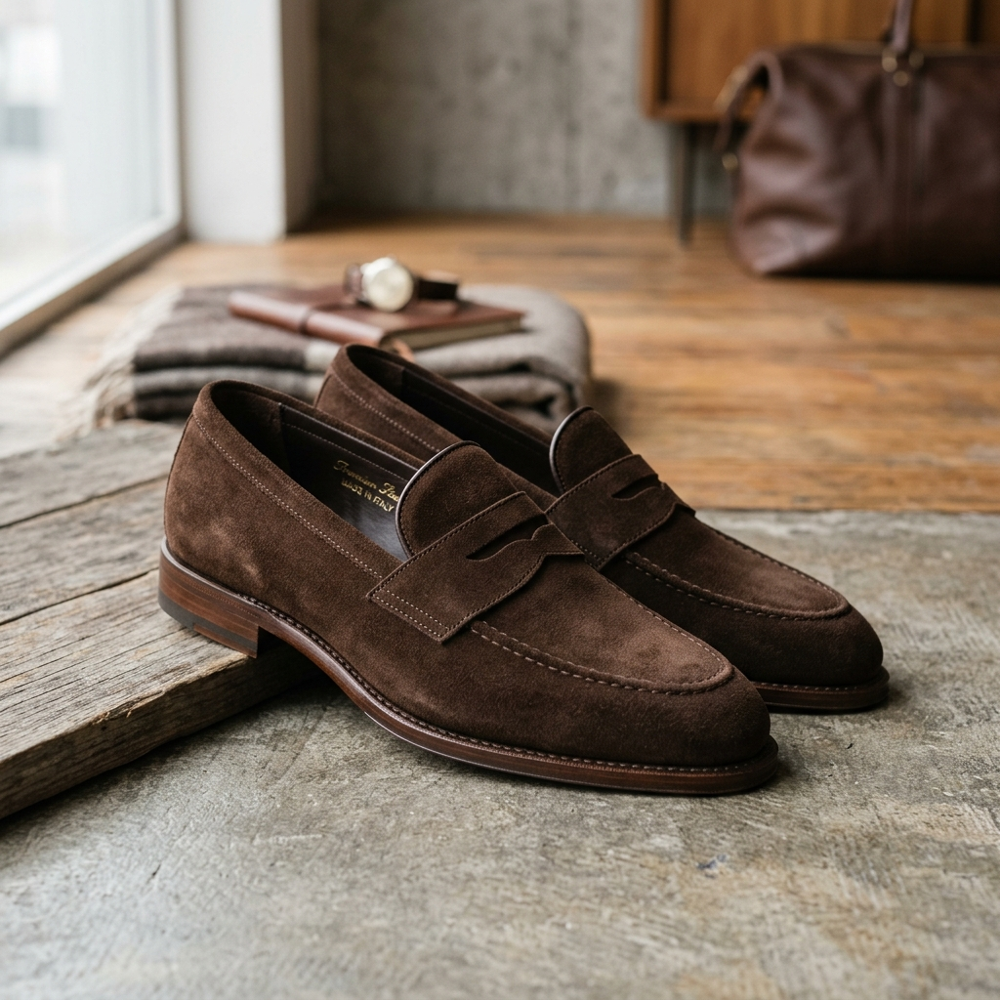

關於 AURA：我們如何將匠心與現代美學編織進每一雙鞋履中。
💎 葉緯萱的鞋子專賣店｜讓您的每一步都踏出自信與舒適 「時尚、舒適、機能」—— 給雙腳最頂級的呵護。 還在為找不到一雙兼顧美觀與舒適的鞋子發愁，或是對長時間站立、走動造成的腳部痠痛束手無策嗎？葉緯萱的鞋子專賣店理解您對細節的堅持。我們不只是賣鞋，更是您雙腳的守護者。 --- ### 👟 我們的核心服務 **極致足部美學** * **流行女鞋與男鞋推薦**：引進當季最流行款式，我們精心嚴選各大熱門【女鞋 品牌】，不論是時尚老爹鞋、氣質瑪莉珍鞋，還是修飾身形又極具英倫風的【厚底樂福鞋】，讓您隨時閃耀自信。同時提供多款流行【樂福鞋 穿搭】靈感，讓您輕鬆駕馭各種場合。 * **質感皮鞋推薦與修復指引**：如果您正在尋找兼顧商務與休閒的紳士鞋款，我們為您準備了年度頂級【皮鞋 推薦】名單。嚴選優質皮革，提供專業休閒皮鞋與商務皮鞋，並分享保養知識，讓您的愛鞋長效維持深邃光澤。 * **日常百搭休閒系列**：精選白鞋、帆布鞋、懶人鞋與豆豆鞋，更有網友高評價的時尚【樂福鞋 推薦】款式，兼顧輕便與時尚，完美融入您的日常穿搭。 **職人等級機能與運動專業** * **高效能運動系列**：針對熱愛健走與重訓的朋友，我們提供多款專業【運動鞋 推薦】品項；若您是慢跑愛好者，店內也備有全方位【慢跑鞋 推薦】專區，提供優異的避震與支撐，無論日常健走還是高強度運動都能輕鬆應對。 * **頂級防護系列**：採用防風雨機能材質，店內常年熱銷的【防水鞋 推薦】款式，具備長效撥水抗污功能，讓您在雨天也能乾爽前行。 * **全方位久站鞋與護士鞋**：特別針對需要長時間站立的職人設計，搭載舒適氣墊與符合人體工學的鞋墊，徹底釋放雙腳壓力。 **特殊與全方位戶外護理** * **安全鞋推薦與工作防護**：提供符合國家標準的鋼頭鞋與工作鞋，兼顧防護力與舒適度，守護您的工作安全。 * **戶外、特殊與兒童鞋款**：從休閒拖鞋、涼鞋、洞洞鞋，到專業的溯溪鞋與雪鞋，甚至連家中小寶貝上體育課必備的【兒童足球鞋】都一應俱全，滿足全家人天候、全地形的出行需求。 --- ### 💰 價格透明，品質看得見 我們深知顧客在乎鞋子性價比與品質的合理性，因此葉緯萱的鞋子專賣店堅持價格公開透明。 * **精準鞋子尺寸測量服務**：現場提供專業量腳儀器，精準測量您的【鞋子 尺寸】，依據您的腳型與大小推薦最合適的鞋款，拒絕買錯鞋的浪費。 * **各類鞋款分級定價**：不論是百搭潮流款還是專業機能款，品項標價清晰，讓您清楚每一分錢的價值。 * **線上商城與店取預約**：提供完善的線上挑選與門市試穿預約服務，讓忙碌的您也能輕鬆享受極致專業。 --- ### ⭐ 為什麼選擇葉緯萱的鞋子專賣店？ * **專業選鞋技術與細節控**：每一位門市顧問都經過專業訓練，對腳型與鞋款搭配有近乎苛求的堅持。 * **高品質材料選用**：只挑選透氣度高、耐磨、保護力最強的優質【鞋子 品牌】與面料。 * **網友好評推薦**：我們是 PTT 與 Dcard 網友熱議的優質鞋店，口碑保證。 --- 立即預約您的足部美學體驗！ 📍 地址：[請填入您的店面地址] 📞 預約專線：[請填入您的電話] 💬 LINE 線上諮詢：[請填入 LINE ID] 葉緯萱的鞋子專賣店 —— 我們懂鞋，更懂愛生活的你。

AURA 創立於 2018 年，品牌名稱源自拉丁語中的「氣息」或「氣場」。我們相信，一雙好鞋不只是行走的工具，更是一個人內在氣場的眼神與展現。
我們從創立之初就堅持尋找最優質的原料。為了實現極致舒適與優雅並存的設計，我們的設計師與擁有數十年製鞋經驗的台灣在地鞋匠合作，經過上百次楦頭調整，開發出完美貼合亞洲人腳型的黃金比例楦頭。
「每一步，都值得溫柔對待。」這不僅是我們的口號，更是每一個 AURA 成員秉持的信念。我們希望當您穿上 AURA 的那一刻，能感受到來自皮革的溫度，以及走在人生旅途上的自信與從容。
記錄我們一路走來的堅持與成長軌跡。
AURA 獨立製鞋工坊於台灣正式設立，開啟手工皮鞋研發旅程。
推出「專業運動慢跑」系列，成功將高彈中底科技融入經典流線造型。
首間線下實體美學旗艦店於台北市大安區開幕，提供專屬一對一量腳服務。
啟動環保與可持續材質鞋款開發，採用天然水性黏合劑與永續無毒染色科技。